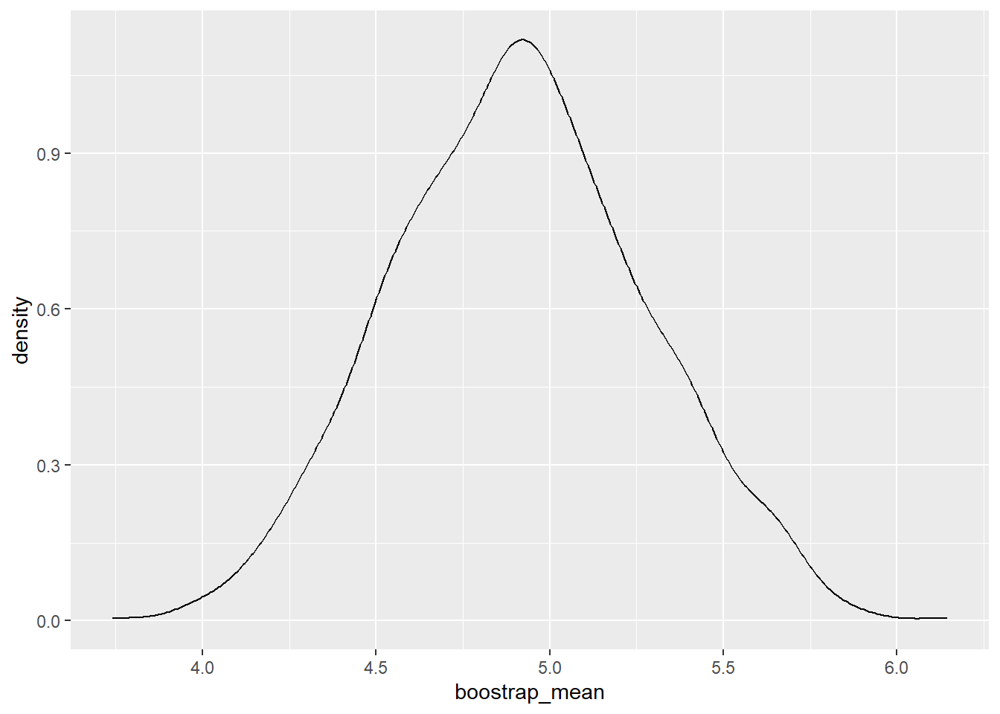
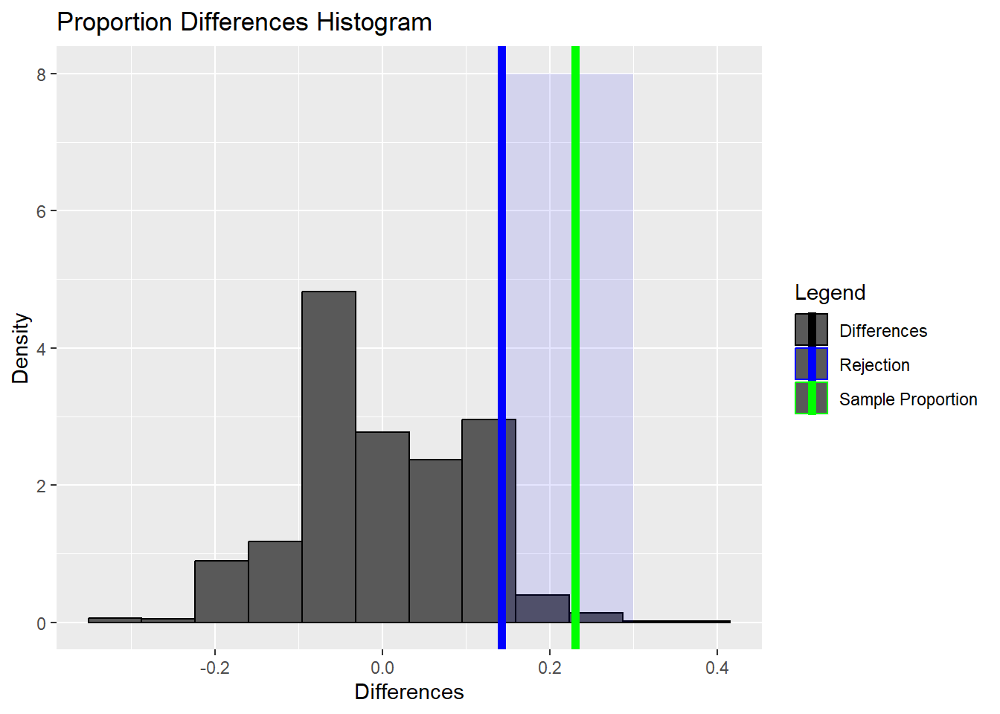

Statistical Hypotheses
This page features theories involving statistical hypotheses, including:
- Null vs. Alternative Hypothesis
- Analogy
- Test Statistic
- Rejection Region & Significance Levels
- Type I and Type II Errors
- Power and Statistical Learning
- Bootstrapping
- Hypothesis Testing with Randomization
A statistical hypothesis is a claim about the value of a parameter of a population characteristic.
Competing Hypotheses
- \(H_0\): Null Hypothesis
- \(H_A\): Alternative Hypothesis
Classic Jury Analogy
Consider a jury in a criminal trial. When a defendant is accused of a crime, the jury presumes that they are not guilty.
- \(H_0\): Not Guilty
- \(H_A\): Guilty
The jury is then presented with evidence. If the evidence seems implausible under the assumption of non-guilt, we might reject the null hypothesis of non-guilt, and claim that the defendant is (likely) guilty.
In the case of statistical hypothesis testing, we use data to find evidence, leading us to arrive at two possible conclusions:
- Reject the null hypothesis, \(H_0\), in favor of the alternative hypothesis, \(H_A\)
- Fail to reject the null hypothesis, \(H_0\)
Setting Up the Hypothesis Test
The null hypothesis will almost always be represented with equivalence. The alternative hypothesis will be then be represented with an inequality or shown to be not equivalent.
- \(H_0\): \(\theta = \theta_0\)
-
\(H_A\): One of the Following:
- \(\theta > \theta_0\)
- \(\theta < \theta_0\)
- \(\theta \neq \theta_0\)
The alternative hypothesis is the hypothesis for which we are seeking statistical evidence for.
Test Statistic and Finding Evidence
A test statistic is a quantity derived from the sample data and calculated assuming that the null hypothesis is true. It is used in the decision about whether or not to reject the null hypothesis.
Rejection Regions and Significance Level
The rejection region is a range of values of the test statistic that would lead you to reject the null hypothesis.
The significance level \(\alpha\) indicates the largest probability of the test statistic occurring under the null hypothesis that would lead you to reject the null hypothesis.
Rejection Regions for Alternative Hypotheses
The following example uses the \(z\) statistic, but the concept holds for other statistics and critical values.
| Alternative Hypothesis | Rejection Region for Level \(\alpha\) Test |
|---|---|
| \(H_A\): \(\theta > \theta_0\) | \(z \geq z_{\alpha}\) |
| \(H_A\): \(\theta < \theta_0\) | \(z \leq z_{\alpha}\) |
| \(H_A\): \(\theta \neq \theta_0\) | \(z \geq z_{\alpha}\) OR \(z \leq z_{\alpha}\) |
Type I and Type II Errors
Type I Error
A Type I error is rejecting the null hypothesis when it is actually true. This is actually representing by \(\alpha\), where significance level is set at \(100*(1-\alpha)\).
Type II Error
A Type II error is failing to reject the null hypothesis when it is actually false. This is normally considered worse than Type I errors.
Visualizing Errors
Power
Considering power helps to ensure high quality hypothesis tests.Recall” - Type I errors are when we reject the null hypothesis when it is true - Type II errors are when we fail to reject the null hypothesis when the alternative hypothesis is true
The power of a hypothesis test is the probability of making the correct decision if the alternative hypothesis is true. In other words, it is the probability of rejecting the null hypothesis when the alternative hypothesis is true.
If \(\beta\) is the probability of making a Type II error, then
\(Power = 1 - \beta\)
In general, we want to minimize \(\alpha\) and maximize power.
Visualizing Power
Bootstrapping
Data can be expensive, and we don’t always want to examine means, proportions, and variances. Enter the The Bootstrap Principal, which allows us to use a smaller data set without sacrificing statistical rigor or collecting more samples. Some use cases include when we don’t have enough data, when we can’t use the CLT, and when we’re trying to compute CIs for unknown distributions. Consider a sample \(X_1, \dots , X_n\), but instaed of computing a CI from the sample, we instead re-sample with replacement many times and then examine the re-samples.
A bootstrapped resample is a set of n draws from the original sample set with replacement.
The Bootstrap Process
- Take re-samples (with replacement) of the same size as the original sample.
- Compute the desired statistic for each re-sample. These statistics form the distribution.
- If we’re specifically targeting a \((100-\alpha)\%\) confidence interval, then find the \(\alpha^{th}\) and \((1-\alpha)^{th}\) percentiles. This will be the CI.
Hypothesis Testing with Randomization
Statistical inference is primarily concerned with understanding and quantifying the uncertainty of parameter estimates.
Almost always variability in data – one dataset will not be identical to a second dataset even if they are both collected from the same population using the same methods. How different Is one dataset from another?
Studying randomness of this form is a key focus of statistics. Hypothesis Testing with Randomization helps us study this randomness. In other words, we’re examining whether variability is due to:
- The Casual Mechanism (one variable actually causes the change in a second variable)
- Natural Variability Inherent to the Data (coincidence)
To form a conclusion, we compare the actual experiment to the randomly assigned experiment. If the actual experiment demonstrates results that are more extreme that the randomly assigned experiments, then we may suspect that the explanatory variable is causing the result, and not just inherent variability.
The Randomization Process
Image we have boolean results from two separate groups. In other words, within each group, some have the results of yes and some have the results of no. Between the two groups, there are different proportions of yes values. We want to test if there is an explanatory variable causing the difference in proportions, or if it is due to inherent variability.
In the following process, let’s consider each result a card, and each card will have a label of yes or no.
The groups will likely not be the same size, let’s call the length of Group 1 \(n_1\) and the length of Group 2 \(n_2\).
Creating the Distribution
- Shuffle all the cards. Group displacement will occur (i.e. after shuffling there will only be a total count of
yesandno, and sense of group will be removed). - Put \(n_1\) cards into Group 1 and \(n_2\) cards into Group 2
- Compute the different in proportions between
yesfor each group - Repeat this many times to get a distribution of the differences in proportions
Performing the Hypothesis Test
The hypothesis test will look something of the form (alternative depends on how the test is setup):
- \(H_0\): \(p_1 = p_2\) (i.e. the true proportions of the group are equivalent)
- \(H_A\): \(p_1 > p_2\) (i.e. the true proportions of Group 1 is greater than Group 2, or different in some manner depending on how the test is constructed)
When performing the hypothesis test, we want to compare the critical value on rejection region with the test statistic.
If the test statistic is at least as extreme as the critical value calculated from the distribution (i.e. test statistic lies within the rejection region), for a specified significance level, then we can reject the null hypothesis in favor of the alternative hypothesis. If not, we lack sufficient evidence to reject the null hypothesis.
When to Use What?
Inference on Mean and Proportions
| Category | \(n \geq 30\) | \(n < 30\) |
|---|---|---|
| Normal Data, Known \(\sigma\) | z-test | z-test |
| Normal Data, Unknown \(\sigma\) | z-test | t-test |
| Non-Normal Data, Known \(\sigma\) | z-test | bootstrap |
| Non-Normal Data, Unknown \(\sigma\) | z-test | bootstrap |
Inference on Variance
| Category | \(n \geq 30\) | \(n < 30\) |
|---|---|---|
| Normal Data | chi-squared | chi-squared |
| Non-Normal Data | further research required | bootstrap |
Inference on Anything Else (Median, Skew, Discrimination Rate, etc.)
| Category | \(n \geq 30\) | \(n < 30\) |
|---|---|---|
| Normal Data | bootstrap | bootstrap |
| Non-Normal Data | bootstrap | bootstrap |
Some Notes
Bootstrapped p-values are about uncertainty over the specific sample of the population that you drew, while randomization inference p-values are about uncertainty over which units within your sample are assigned to the treatment.
Bootstrap resamples are the same size as the original because variance of the statistic depends on the size of the sample. If we want to approximate this variation, we need to use resamples of the same size.
Randomization Inference is all about using nothing but the act of physical randomization to make inferences about causal effects.
Examples
Hypothesis Testing
Bootstrapping
Hypothesis Testing with Randomization
R Programming
Hypothesis Testing
Bootstrapping
Lecture 5: replace, sample, apply, and quantile.
Code

Hypothesis Testing with Randomization
Proportion Example
Code
prop_treatment <- 45/69
prop_control <- 30/34
prop_difference <- prop_control - prop_treatment
prop_difference[1] 0.230179Code
# create_data function
create_data <- function(control_total, control_death,
treatment_total, treatment_death) {
total_deaths <- control_death + treatment_death
total_subjects <- control_total + treatment_total
non_survivors <- rep(1, total_deaths)
survivors <- rep(0, total_subjects - total_deaths)
return(c(non_survivors, survivors))
}Code
# shuffle function
simulation <- function(control_total = 34, control_death = 30,
treatment_total = 69, treatment_death = 45) {
index_data <- create_data(control_total, control_death,
treatment_total, treatment_death)
shuffled_data <- sample(x = index_data, size = length(index_data),
replace = FALSE)
control <- shuffled_data[1:control_total]
treatment <- shuffled_data[(control_total+1):length(shuffled_data)]
# proportion of deaths in control group
control_p <- sum(control) / length(control)
# proportion of deaths in treatment group
treatment_p <- sum(treatment) / length(treatment)
# compute difference
difference_p <- control_p - treatment_p
return(difference_p)
}Code
# run simulation 1000 times
randomized_differences <- replicate(1000, simulation())Code
95%
0.14237 Code
ggplot() +
geom_histogram(aes(x = randomized_differences, y = after_stat(density),
color = 'Differences'), bins = 12) +
annotate('rect', xmin = difference_quantile, xmax = 0.3,
ymin = 0, ymax = 8, alpha = 0.1, fill = 'blue') +
geom_vline(mapping = aes(color = 'Rejection', xintercept = difference_quantile),
linewidth = 2) +
geom_vline(mapping =
aes(color = 'Sample Proportion',
xintercept = prop_difference), linewidth = 2) +
xlab('Differences') +
ylab('Density') +
ggtitle('Proportion Differences Histogram') +
scale_color_manual(breaks = c('Differences', 'Rejection', 'Sample Proportion'),
values = c('black', 'blue', 'green'),
name = 'Legend')